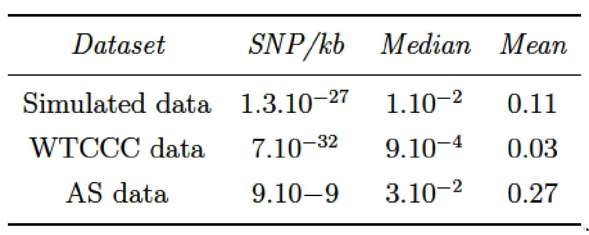

4.4 Results
4.4.1 Results and discussions of the numerical simulations
4.4.1.1 Area Under the ROC Curve
For each simulation, the cut level algorithm was applied. We recall that this algorithm calculates a prediction error on a test set for several levels in a constrained-HAC tree with a ridge regression model and chooses the level for which this error is the smallest. The AUC-ROC is plotted for the different levels, and the best cut level corresponds to the level for which AUC-ROC is the greatest. The results from the simulation scenario clusSNP and singleSNP described in Section 4.3.1 are shown in Figure 4.3.
Figure 4.3: Area under ROC curves according to the number of clusters in the clusSNP and singleSNP scenarios: the vertical lines indicate the number of aggregated-SNP (clusters) obtained with Algorithm 4, i.e. the level where the prediction error is minimized (AUC-ROC at its maximum).
Our algorithm cuts the hierarchy either at a fairly high level (few large clusters) or at a low level (many small clusters), depending on the number of causal variables we used to generate the phenotype. The more the number of causal regions decreases, the higher the algorithm cuts in the hierarchical tree. In either case our algorithm is able to increase the predictive power by aggregating SNP with the function . We are thus able build a matrix of uncorrelated aggregated-SNP predictors that are representative of the initial SNP matrix and strongly linked to the phenotype.
4.4.2 Performance results for simulated data.
As previously described, we evaluate and compare the methods using two metrics, namely Recall and Precision.
Here the precision metric is somewhat relaxed compared to its true definition since we adapted the definition of a true positive and false positive to the GWAS context. It is important to note that for all the methods, we compare the Benjamini-Hochberg method to control FDR with the Bonferroni correction to control FWER at a threshold of \(5\%\). However, since there are residual correlations between SNP clusters and that the replication of numerous samples per combination of parameters is difficult in this realistic setting of simulations, the observed Type I error rate may be greater than \(5\%\). What we think is important to put forward to in these simulations is the ability of our algorithm to define groups of relevant clusters that will be detected on average with more precision and more power (SASA and SKATtree) than using an arbitrary group definition (SKATnotree) or no definition of groups at all (SMA).
![Recall vs Precision for each method (shape and colours in plot). In rows are the simulation scenarios. In columns, we evaluate performance using Benjamini-Hochberg threshold (left) and bonferroni correction threshold (right). The second row illustrates the performance to retrieve the true causal genomic region under the SNPclus scenario, thus only group-based approaches are considered (SASA, SKATtree and SKATnotree). The numbers inside the points correspond to the number of causal predictors and each point is the average value of 5 replicates.](book_files/figure-html/scatterperfsimu-1.png)
Figure 4.4: Recall vs Precision for each method (shape and colours in plot). In rows are the simulation scenarios. In columns, we evaluate performance using Benjamini-Hochberg threshold (left) and bonferroni correction threshold (right). The second row illustrates the performance to retrieve the true causal genomic region under the SNPclus scenario, thus only group-based approaches are considered (SASA, SKATtree and SKATnotree). The numbers inside the points correspond to the number of causal predictors and each point is the average value of 5 replicates.
The results represented in Figure 4.4 show that the methods using our algorithm for the cluster definition (SASA and SKATtree) have in average a better precision than the two other methods. The approach SASA, which combine our clustering algorithm and the aggregating function to test the association of aggregated-SNP with the phenotype, perform poorly in term of Recall but is far better in term of Precision compared to SMA and SKATnotree. These results suggest that it is better to combine our algorithm with the SKAT method than with the SASA method. We also note that applying the SKAT approach on an arbitrary group definition (SKATnotree) lead to a good recall but a very poor precision, showing the benefit of using our custom group definition in this context. Regarding the SMA approach in the singleSNP scenario, we can observe a loss in term of Recall compare to the SKATtree and SKATnotree method suggesting that we can take benefit of grouping low effect SNP to improve the power to detect causal genomic regions.
In GWAS, having a method with a good precision is as important, or even more important, than having a good recall. It is better to spot a few significant associations with a high certainty than to spot numerous significant associations but with only a low level of certainty for most of them. For this reason, we believe that our method represents an improvement in terms of precision without loss of power insofar as SKATtree seems able to detect significant genomic regions associated with the phenotype with a higher degree of certainty than standard approaches.
4.4.3 Application in Wellcome Trust Case Control Consortium(WTCCC) and Ankylosing Spondylitis (AS) studies
To evaluate the performance of our method on real data, we performed GWAS analysis on datasets made available by (WTCCC 2007). The WTCCC data collection contains 17000 genotypes, composed of 3000 shared controls and 14000 cases representing 7 common diseases of major public health concern: inflammatory bowel disease (IBD), bipolar disorder (BD), coronary artery disease (CAD), hypertension (HT), rheumatoid arthritis (RA), and Type I (T1D) and Type II (T2D) diabetes. Individuals were genotyped with the Affymetrix 500K Mapping Array Set and are represented by about 500,000 SNP (before the application of quality control filters).
In parallel to the analysis of the WTTCC data, we decided to assess our method on another dataset from a different study. The ankylosing spondylitis (AS) dataset consists of the French subset of the large study of the International Genetics of Ankylosing Spondylitis (IGAS) study (International Genetics of Ankylosing Spondylitis Consortium (IGAS) et al. 2013). For this subset, unrelated cases were recruited through the Rheumatology clinic of Ambroise Paré Hospital (Boulogne-Billancourt, France) or through the national self-help patients’ association: “Association Française des Spondylarthritiques”. Population-matched unrelated controls were obtained from the “Centre d’Etude du Polymorphisme Humain”, or were recruited as healthy spouses of cases. The dataset contains 408 cases and 358 controls, and each individual was genotyped for 116,513 SNP with Immunochip technology.
To remove the bias induced by population stratification in Genome-Wide analysis, we added the first 5 genomic principal components into the regression model as described in Section 3.6.3. Since the methods evaluated here do not deal with missing values, we chose to impute the missing genotypes with the most frequent genotypic value observed for each SNP.
For each dataset, we filtered the values to keep only those SNP having a MAF greater than \(5\%\). The minor allele frequencies of each dataset are represented in Figure 4.5.
Figure 4.5: Histograms of Minor Allele Frequencies (MAF) distribution in each datasets. (BD) Bipolar disorders; (CAD) Coronary artery disease; (IBD) Inflammatory bowel disease; (HT) Hypertension; (RA) Rheumatoid arthritis; (T1D) Type I diabetes; (T2D) Type II diabetes.
We applied our cut level algorithm to find relevant clusters of SNP and we performed single marker analysis on single SNP (SMA) and on groups of SNP (SASA, SKATtree, SKATnotree).
4.4.4 Results in WTCCC and AS studies
4.4.4.1 AUC-ROC curves
In this section, we compare the AUC-ROC curves generated by our cut level algorithm for each disease (WTCCC and AS data).
Concerning the WTCCC diseases, given that patients were all genotyped using the same micro-array, their genotypes have the same LD structure, and therefore the shapes of the AUC-ROC curves should be very similar between the different diseases. As can be observed in Figure 4.6 (WTCCC diseases), the shapes of the AUC-ROC curves are closely similar, with a chosen cut level located around 100 000 clusters of SNP, suggesting a shared LD pattern among patients.
Figure 4.6: AUC-ROC for different cut levels in a HAC-tree of 7 WTCCC diseases after quality control filters. Each point corresponds to an AUC value computed on a test set from a logistic ridge regression model for a given level in the constrained-HAC tree.
In contrast, the AUC-ROC from the AS data (Figure 4.7) behaves differently from the WTCCC data. Predictive power is substantially improved if aggregated-SNP predictors are used at a fairly high level in the hierarchical tree (7478 optimal clusters identified by the cut level algorithm). It is relevant to note that the pattern we observe on this real dataset is similar to the pattern we observed in the numerical simulations, especially under the clusSNP scenario.
Figure 4.7: AUC-ROC for different cut levels in a HAC-tree of the spondylitis arthritis disease (Immunochip micro-array). Each point corresponds to an AUC value computed on a test set from a logistic ridge regression model for a given level in the constrained-HAC tree.
As we remarked concerning the WTCCC results, the algorithm identifies a relatively high number of clusters in relation to AS and simulated data. This difference is certainly due to the LD level among the genetic markers in the Affymetrix array. The correlation levels among SNP for a given bandwidth are similar between the simulated and the AS data, but greater than for the WTCCC data (Table 4.1 and Figure 4.8). This suggests that there is a stronger LD pattern between blocks of SNP in AS and simulated data, implying that the optimal number of clusters identified by the algorithm is dependent on the LD level among variables.
Figure 4.8: Comparison of linkage disequilibrium level among SNP for 3 different types of dataset: WTCCC, simulated and ankylosing spondylitis datasets. LD computation is based on \(R^2\) between SNP.
4.4.4.2 GWAS analysis on AS and WTCCC datasets
To evaluate the ability of our procedure to discover new associations between SNP and ankylosing spondylitis, we compare our procedure with the univariate approach (SMA) and SKAT model with our group definition and arbitrary group definition (20 SNP). For SASA, we perform multiple hypotheses testing on the aggregated-SNP predictors in order to unravel significant associations with the phenotype. Figure 4.9 presents the results of the association analysis. For each method the logarithm of the \(p\)-value of the different predictors is plotted along their position on the genome.
Figure 4.9: Manhattan plots showing results of GWAS analysis on ankylosing spondylitis data. For each Manhattan plot, the Benjamini-Hochberg (BH) threshold is represented by the blue line and the Bonferroni threshold by the red line. According to the BH threshold, there are: (A) 64 significantly associated aggregated-SNP; (B) 602 significantly associated single SNP; (C) 80 significantly associated groups of SNP and (D) 138 significantly associated groups of SNP.
Either method highlight a region on chromosome 6 strongly associated with the phenotype. This region corresponds to the Major Histocompatibility Complex (MHC), and Human Leukocyte Antigen (HLA) class I molecules HLA B27 belonging to this region have been identified as a genetic risk factor associated with ankylosing spondylitis (Woodrow and Eastmond 1978). The approach SASA succeeds in detecting this risk locus with a good precision, 64 aggregated-SNP variables are significantly associated with the phenotype compared to 602 significantly associated SNP with the standard SMA.
For the analysis of the WTCCC datasets, we represent the results, in Figure 4.10, by plotting the expected \(p\)-value against the observed \(p\)-value. We perform the analysis using the approach SASA only.
![Q-Q plots of group-based genome-wide analysis on WTCCC data using the SASA approach. For each Manhattan plot, the Benjamini-Hochberg (BH) threshold is represented by the green dotted line and the Bonferroni threshold by the red dashed line. (A) Bipolar disorder - 13 significant clusters of SNP; (B) Coronary artery disease - 4 significant clusters of SNP; (C) Inflammatory bowel disease - 356 significant clusters of SNP ; (D) Hypertension - 47 significant clusters of SNP ; (E) Rheumatoid arthritis - 202 significant clusters of SNP ; (F) Type I diabetes - 358 significant clusters of SNP ; (G) Type II diabetes - 28 significant clusters of SNP.](book_files/figure-html/qqplotWTCCC-1.png)
Figure 4.10: Q-Q plots of group-based genome-wide analysis on WTCCC data using the SASA approach. For each Manhattan plot, the Benjamini-Hochberg (BH) threshold is represented by the green dotted line and the Bonferroni threshold by the red dashed line. (A) Bipolar disorder - 13 significant clusters of SNP; (B) Coronary artery disease - 4 significant clusters of SNP; (C) Inflammatory bowel disease - 356 significant clusters of SNP ; (D) Hypertension - 47 significant clusters of SNP ; (E) Rheumatoid arthritis - 202 significant clusters of SNP ; (F) Type I diabetes - 358 significant clusters of SNP ; (G) Type II diabetes - 28 significant clusters of SNP.
References
WTCCC. 2007. “Genome-Wide Association Study of 14,000 Cases of Seven Common Diseases and 3,000 Shared Controls.” Nature 447 (7145): 661–78.
International Genetics of Ankylosing Spondylitis Consortium (IGAS), Adrian Cortes, Johanna Hadler, Jenny P. Pointon, Philip C. Robinson, and others. 2013. “Identification of Multiple Risk Variants for Ankylosing Spondylitis Through High-Density Genotyping of Immune-Related Loci.” Nature Genetics 45 (7): 730–38.
Woodrow, J. C., and C. J Eastmond. 1978. “HLA B27 and the Genetics of Ankylosing Spondylitis.” Annals of the Rheumatic Diseases 37 (6): 504–9.